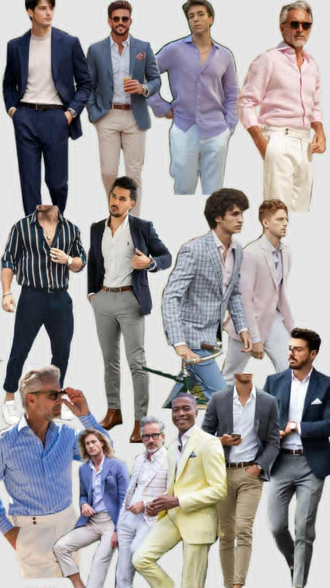
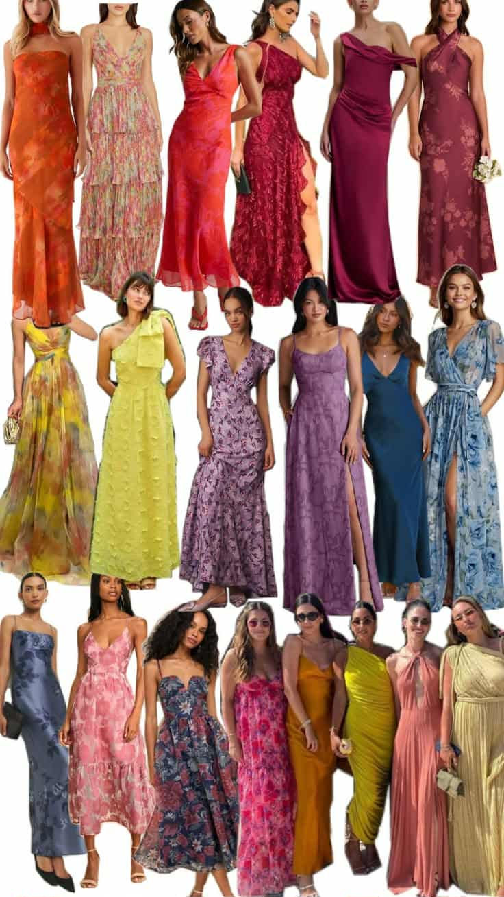

We're so excited to celebrate with you! Here's a guide to help you plan your look for our special day.
Formal / Semi-Formal Attire

A classic suit or a smart casual would be perfect for the occasion.

Elegant floor-length or cocktail dresses in earthy or pastel tones.